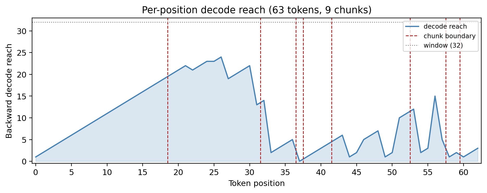
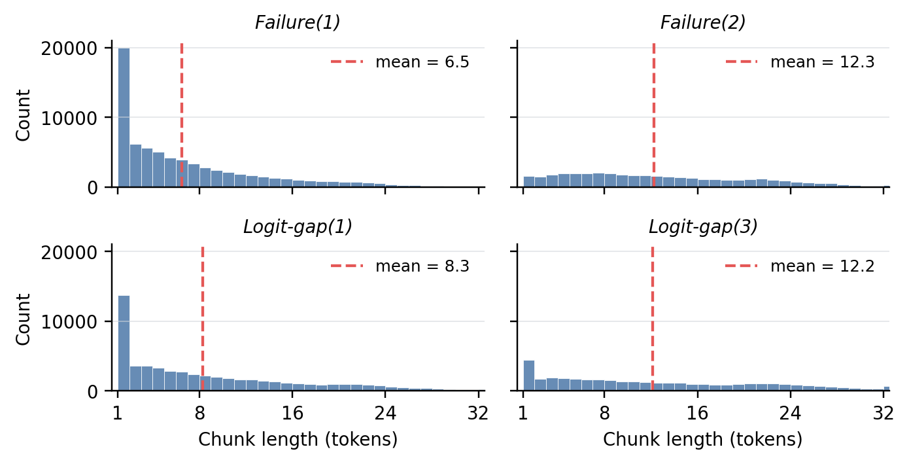

TL;DR ReconSpan cuts text into chunks that a backward decoder can reconstruct from a single contextual prefix code, and keeps one such code as the latent token for each chunk. At matched per-document latent-token counts, these boundaries preserve more source tokens in native reconstruction than equal-spacing, surprisal, or random boundaries.
Idea. Place each boundary where a decoder can no longer reconstruct the span from a single code: difficult spans get shorter chunks, easier spans get longer ones.
| Boundary signal | Examples |
|---|---|
| Fixed position | MEGABYTE; Extensible Tokenization |
| Forward predictive entropy | Byte Latent Transformer; Dynamic Token Pooling |
| Semantic similarity | SemToken |
| Learned boundary scores | Dynamic Token Pooling; H-Net; Charformer; FLEXITOKENS |
| Backward reconstruction fidelity | ReconSpan (this work) |
The contribution is the allocation criterion and a characterization of the resulting latent tokens, not continuous tokens or adaptive segmentation by themselves. ReconSpan runs over an existing subword sequence: it is a second-stage latent tokenizer, not a byte-to-text replacement.
Illustrative chunk sizes, not a paper figure. Two stopping families: Failure(m) stops at the mth wrong token; Logit-gap(τ) stops when the summed gap between the top logit and the true token's logit exceeds τ.
Why backward? Decoding newest-first, the first failure directly measures how far back one code reaches.

Water boils at 100 degrees Celsius, and Genghis Khan founded the Mongol|Empire in 1206. The clarinet has a single-reed|mouthpiece, while photos|ynthesis|converts sunlight into glucose|. Napoleon was exiled to Elba in 1814|, but the liver performs|over 500|metabolic functions.
Paper appendix figure: decode reach from every prefix code; red lines mark the 8 interior boundaries. Within-word splits show the example does not imply linguistic alignment.
Mean longest exactly reconstructed suffix (tokens) from one 1024-dim code of an ℓ-token window, 500 held-out Wikipedia windows.
| ℓ | ReconSpan | SONAR |
|---|---|---|
| 8 | 6.47 | 5.00 |
| 16 | 10.86 | 7.94 |
| 32 | 9.94 | 7.24 |
| 64 | 8.15 | 1.16 |
| 128 | 8.26 | 0.05 |
| 256 | 7.42 | 0.03 |
Short-range reach stays stable as the window grows, while SONAR's suffix collapses beyond ℓ = 32. That stable reach is what chunking relies on.

Four stopping rules applied post hoc to the same model on the same 500 Wikipedia documents; dashed lines mark the mean. The small pile-up at 32 comes from the W = 32 decode window (<1% of chunks).
| Stopping rule | Base tokens |
|---|---|
| Failure(1) | 6.50 |
| Logit-gap(1) | 8.31 |
| Logit-gap(3) | 12.17 |
| Failure(2) | 12.28 |
| Policy / rule | Mean len. | Exact chunk | Exact token | Suffix | PPL ↓ |
|---|---|---|---|---|---|
| Same per-document chunk count as Failure(1) | |||||
| ReconSpan, Failure(1) | 6.50 | .797 | .907 | .944 | 15.95 |
| equal spacing | 6.50 | .809 | .816 | .895 | 15.75 |
| surprisal | 6.50 | .802 | .617 | .773 | 19.50 |
| random (matched) | 6.50 | .794 | .618 | .767 | 20.03 |
| Looser ReconSpan rules (same model) | |||||
| Logit-gap(1) | 8.31 | .730 | .809 | .890 | 16.84 |
| Logit-gap(3) | 12.17 | .553 | .541 | .715 | 20.37 |
| Failure(2) | 12.28 | .526 | .536 | .740 | 18.43 |
Each chunk is re-encoded in isolation and decoded. Exact token: share of tokens in perfectly reconstructed chunks. Suffix: share in each chunk's correct newest-first run. PPL: Qwen2.5-1.5B, separate WikiText run.
Scope. Equal spacing is slightly higher on unweighted exact chunk (.809 vs .797) and slightly lower in PPL (15.75 vs 15.95). The win is on token-weighted native reconstruction, not uniform dominance.
Where boundaries fall, not only how many there are, decides how much text survives. Across rule families, mean chunk length largely predicts quality.
| Task | Reader | Readout | Control | Text | Roundtrip |
|---|---|---|---|---|---|
| AG News topic, 4-way | Pythia-410M | 52.5* | 26.4 | 53.0 | 52.8 |
| Llama-3-8B | 74.3* | 24.5 | 72.6 | 73.0 | |
| Llama-3-8B + task FT | 82.7* | 24.2 | 72.6 | 73.0 | |
| LAMBADA exact last word | Pythia-410M | 5.1* | 1.8 | 51.0 | 50.2 |
| Llama-3-8B | 10.0* | 5.5 | 75.8 | 72.5 | |
| Llama-3-8B + task FT | 20.1* | 6.2 | 75.8 | 72.5 | |
| HotpotQA answer EM | Pythia-410M | 0.0 | 1.0 | 7.0 | 6.0 |
| Llama-3-8B | 17.0 | 18.0 | 36.0 | 33.0 | |
| Llama-3-8B + task FT | 30.0 | 23.0 | 36.0 | 33.0 |
Failure(1) codes. Control: another example's codes. Text: raw context to the base model. Roundtrip: autoencoder-reconstructed text. * above control at 95% confidence.
| Continuation source | PPL ↓ |
|---|---|
| Human continuation | 11.95 |
| Llama-3-8B reader | 11.78 |
| Pythia-410M reader | 13.94 |
Fluent, but fluency is not faithfulness: samples keep topic and register while exact content is hard to access.